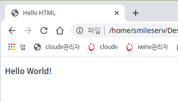

CSS(Cascading Style Sheets)는 HTML과 같은 프로그래밍 언어도, 마크업 언어도 아닙니다. CSS는 HTML 문서에 있는 요소들에 선택적으로 스타일을 적용할 수 있는 'Style sheet 언어'입니다.
CSS를 사용하지 않고 HTML 문서를 작성하게 될 경우,
<!doctype html>
<html>
<head></head>
<body>
<p>Hello World!</p>
</body>
</html>
위 문서는 다음과 같이 출력될 겁니다.
위 문서는 간단한 문서이기 때문에 <font> 태그로도 충분히 텍스트 스타일을 변경할 수 있지만, 문서의 길이가 길어지고, 코드가 복잡해지고, 바꿔야 할 요소가 많아질수록 변경하는 데 걸리는 시간은 기하급수적으로 증가합니다.
이런 문제점들을 해결하기 위해 등장한 것이 바로 'CSS'입니다.
HTML 문서의 글자색을 빨간색으로 변경하려고 한다면 기존에는 아래와 같은 방식을 사용했을 것입니다.
<!doctype html>
<html>
<head></head>
<body>
<p><font color="red">Hello World!</font></p>
</body>
</html>
그러나 CSS의 등장으로 글자색을 바꾸는 방식은 아래와 같이 변경 되었습니다.
<!doctype html>
<html>
<head>
<style>
</style>
p {
color:red;
}
</head>
<body>
<p>Hello World!</p>
</body>
</html>
출력값은 동일하게 'Hello World!'라는 텍스트의 색이 빨간색으로 변경되었을 겁니다.
짧은 문서라서 크게 체감되지 않지만 변경해야 할 <p> 태그값이 수천, 수만개였다면 엄청난 시간을 단축할 수 있습니다.
단편적으로 글자 스타일만을 예로 들었지만 실제로 CSS의 등장으로 손쉽게 HTML 문서에 글꼴, 이미지, 심지어는 페이지 영역까지도 설정할 수 있게 되었습니다.